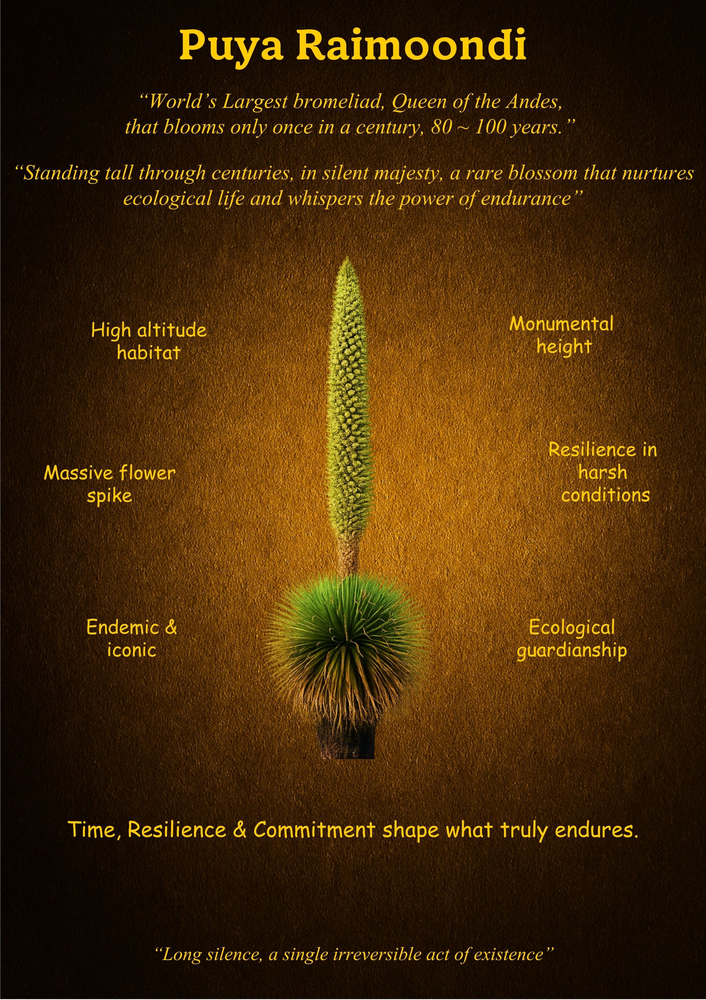

Puya Raimondii
"Standing tall through centuries, in silent majesty."
What is Unique
Known as the "Queen of the Andes," the Puya Raimondii is the world’s largest bromeliad. It is a botanical giant that defies the rapid cycles of the modern world, blooming only once in a century—typically after 80 to 100 years of silent growth. Found only in the high-altitude reaches of the Andes, it produces a massive flower spike that can hold thousands of individual flowers, making it one of the most patient and spectacular life forms on the planet.
Overall Synthesis
This exhibit is a meditation on the "Power of Endurance." The Puya Raimondii teaches us that some legacies cannot be rushed. It spends a human lifetime in "long silence," gathering the strength required for a single, irreversible act of existence. By nurturing ecological life in one of the harshest habitats on Earth, it transforms the landscape through a commitment to standing its ground through the passage of centuries.
Its Functioning Systems
Principles & Wisdom
The Puya Raimondii offers a profound lesson on **The Scale of Time**. It teaches us that **"Time, Resilience & Commitment shape what truly endures."** In an era of instant gratification, the Queen of the Andes reminds us that the most significant acts of existence often require a "Long silence." It whispers that endurance is not just about lasting—it is about nurturing life while you wait for your moment. Your "irreversible act" will be all the more magnificent because of the decades of commitment that preceded it.